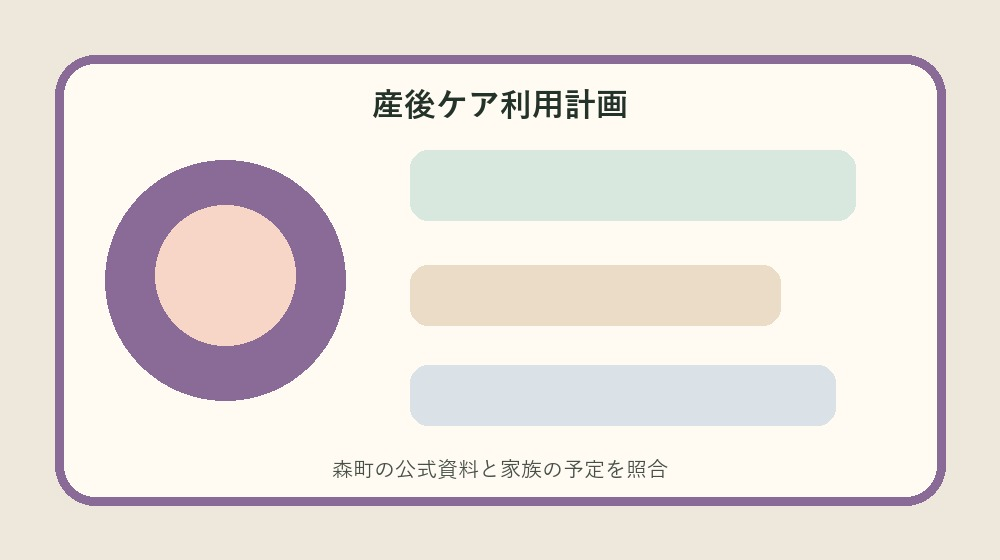
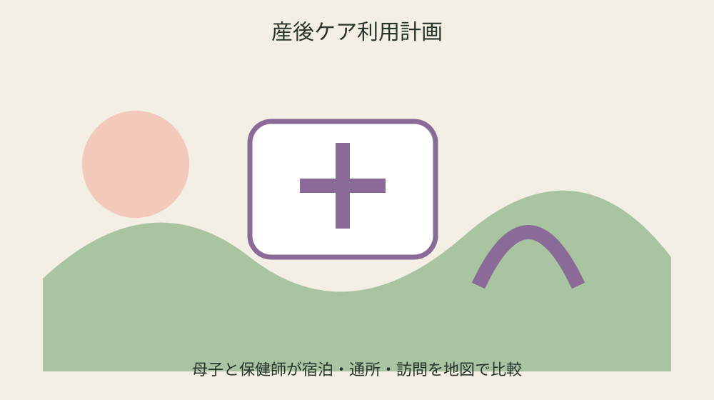
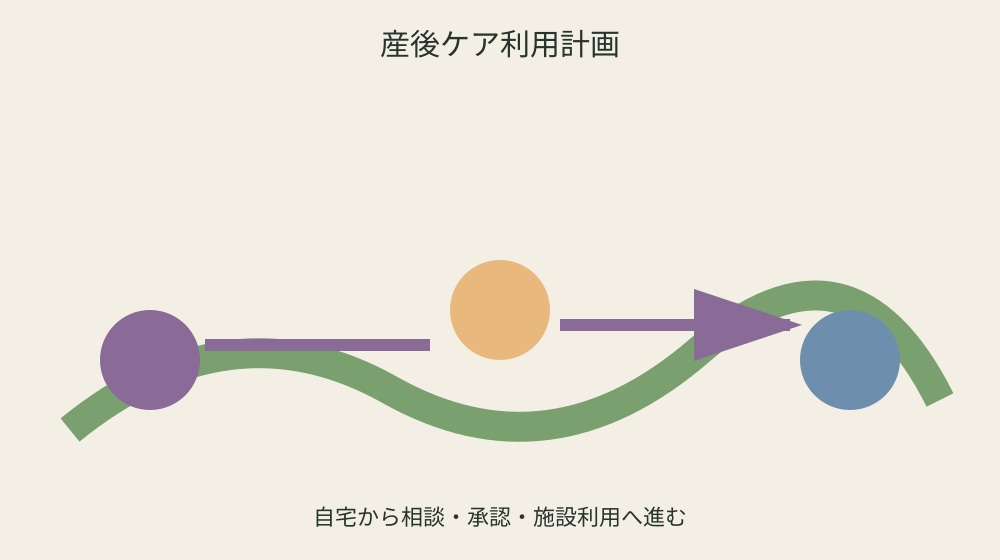

森町の産後ケア｜宿泊・通所・訪問の利用月齢と自己負担を比べる

結論：産後ケア利用比較表へ対象、日付、手元資料、未確認事項を分け、最初の一問だけを森町へ確認します。
困りごとを睡眠・授乳・体調に分ける
困りごとを睡眠・授乳・体調に分けるでは、森町公式の「森町に住民票がある産後1年未満の母子が対象」を起点にします。産後ケア利用比較表には日付、対象、手元資料、確認日を別欄で置き、制度名だけを写して終わらせません。妊娠・出産の経過は人ごとに異なるため、共通条件と自分の状況を同じ文章に混ぜず、二列で見比べます。
手元では「利用前に健康こども課へ相談」も確認します。通知、母子健康手帳、領収書、受診票の原本は動かさず、写しへ番号を付けます。分からない欄は家族の記憶で埋めず、未確認の理由と次に尋ねる窓口を記すことが、産後ケア利用比較表を安全に使う条件です。
健康こども課へ相談するときは、困りごとを睡眠・授乳・体調に分けるについて確認済みの一点と質問したい一点を分けて伝えます。「施設ごとに利用形態が異なる」が個別にどう当てはまるか、回答日、担当、必要書類、次の期限まで書けば、同じ説明を最初から繰り返さずに済みます。
産後ケア利用比較表の旧版は消しません。「必要に応じ減免承認申請書を提出」を採用した根拠、変更前の記録、更新日を残します。医療機関の受入条件や年度案内は変わり得るため、予約・支払・申請の直前には現在の公式案内を再確認してください。
希望日より先に相談日を決める
希望日より先に相談日を決めるでは、森町公式の「母親の体調不良や育児不安等を相談できる」を起点にします。産後ケア利用比較表には日付、対象、手元資料、確認日を別欄で置き、制度名だけを写して終わらせません。妊娠・出産の経過は人ごとに異なるため、共通条件と自分の状況を同じ文章に混ぜず、二列で見比べます。
手元では「保健師等が状況と希望を確認」も確認します。通知、母子健康手帳、領収書、受診票の原本は動かさず、写しへ番号を付けます。分からない欄は家族の記憶で埋めず、未確認の理由と次に尋ねる窓口を記すことが、産後ケア利用比較表を安全に使う条件です。
健康こども課へ相談するときは、希望日より先に相談日を決めるについて確認済みの一点と質問したい一点を分けて伝えます。「自己負担額は世帯区分と施設で異なる」が個別にどう当てはまるか、回答日、担当、必要書類、次の期限まで書けば、同じ説明を最初から繰り返さずに済みます。
産後ケア利用比較表の旧版は消しません。「町から利用承認通知書が交付される」を採用した根拠、変更前の記録、更新日を残します。医療機関の受入条件や年度案内は変わり得るため、予約・支払・申請の直前には現在の公式案内を再確認してください。
宿泊・通所・訪問を比べる
宿泊・通所・訪問を比べるでは、森町公式の「宿泊型・通所型・居宅訪問型がある」を起点にします。産後ケア利用比較表には日付、対象、手元資料、確認日を別欄で置き、制度名だけを写して終わらせません。妊娠・出産の経過は人ごとに異なるため、共通条件と自分の状況を同じ文章に混ぜず、二列で見比べます。
手元では「利用施設ごとに対応月齢が異なる」も確認します。通知、母子健康手帳、領収書、受診票の原本は動かさず、写しへ番号を付けます。分からない欄は家族の記憶で埋めず、未確認の理由と次に尋ねる窓口を記すことが、産後ケア利用比較表を安全に使う条件です。
健康こども課へ相談するときは、宿泊・通所・訪問を比べるについて確認済みの一点と質問したい一点を分けて伝えます。「利用開始日決定後に申請書を提出」が個別にどう当てはまるか、回答日、担当、必要書類、次の期限まで書けば、同じ説明を最初から繰り返さずに済みます。
産後ケア利用比較表の旧版は消しません。「医療行為や緊急預かりとは役割が異なる」を採用した根拠、変更前の記録、更新日を残します。医療機関の受入条件や年度案内は変わり得るため、予約・支払・申請の直前には現在の公式案内を再確認してください。
赤ちゃんの月齢で候補を絞る
赤ちゃんの月齢で候補を絞るでは、森町公式の「利用前に健康こども課へ相談」を起点にします。産後ケア利用比較表には日付、対象、手元資料、確認日を別欄で置き、制度名だけを写して終わらせません。妊娠・出産の経過は人ごとに異なるため、共通条件と自分の状況を同じ文章に混ぜず、二列で見比べます。
手元では「施設ごとに利用形態が異なる」も確認します。通知、母子健康手帳、領収書、受診票の原本は動かさず、写しへ番号を付けます。分からない欄は家族の記憶で埋めず、未確認の理由と次に尋ねる窓口を記すことが、産後ケア利用比較表を安全に使う条件です。
健康こども課へ相談するときは、赤ちゃんの月齢で候補を絞るについて確認済みの一点と質問したい一点を分けて伝えます。「必要に応じ減免承認申請書を提出」が個別にどう当てはまるか、回答日、担当、必要書類、次の期限まで書けば、同じ説明を最初から繰り返さずに済みます。
産後ケア利用比較表の旧版は消しません。「森町に住民票がある産後1年未満の母子が対象」を採用した根拠、変更前の記録、更新日を残します。医療機関の受入条件や年度案内は変わり得るため、予約・支払・申請の直前には現在の公式案内を再確認してください。

施設ごとの受入条件を確認する
施設ごとの受入条件を確認するでは、森町公式の「保健師等が状況と希望を確認」を起点にします。産後ケア利用比較表には日付、対象、手元資料、確認日を別欄で置き、制度名だけを写して終わらせません。妊娠・出産の経過は人ごとに異なるため、共通条件と自分の状況を同じ文章に混ぜず、二列で見比べます。
手元では「自己負担額は世帯区分と施設で異なる」も確認します。通知、母子健康手帳、領収書、受診票の原本は動かさず、写しへ番号を付けます。分からない欄は家族の記憶で埋めず、未確認の理由と次に尋ねる窓口を記すことが、産後ケア利用比較表を安全に使う条件です。
健康こども課へ相談するときは、施設ごとの受入条件を確認するについて確認済みの一点と質問したい一点を分けて伝えます。「町から利用承認通知書が交付される」が個別にどう当てはまるか、回答日、担当、必要書類、次の期限まで書けば、同じ説明を最初から繰り返さずに済みます。
産後ケア利用比較表の旧版は消しません。「母親の体調不良や育児不安等を相談できる」を採用した根拠、変更前の記録、更新日を残します。医療機関の受入条件や年度案内は変わり得るため、予約・支払・申請の直前には現在の公式案内を再確認してください。
自己負担と移動費を分ける
自己負担と移動費を分けるでは、森町公式の「利用施設ごとに対応月齢が異なる」を起点にします。産後ケア利用比較表には日付、対象、手元資料、確認日を別欄で置き、制度名だけを写して終わらせません。妊娠・出産の経過は人ごとに異なるため、共通条件と自分の状況を同じ文章に混ぜず、二列で見比べます。
手元では「利用開始日決定後に申請書を提出」も確認します。通知、母子健康手帳、領収書、受診票の原本は動かさず、写しへ番号を付けます。分からない欄は家族の記憶で埋めず、未確認の理由と次に尋ねる窓口を記すことが、産後ケア利用比較表を安全に使う条件です。
健康こども課へ相談するときは、自己負担と移動費を分けるについて確認済みの一点と質問したい一点を分けて伝えます。「医療行為や緊急預かりとは役割が異なる」が個別にどう当てはまるか、回答日、担当、必要書類、次の期限まで書けば、同じ説明を最初から繰り返さずに済みます。
産後ケア利用比較表の旧版は消しません。「宿泊型・通所型・居宅訪問型がある」を採用した根拠、変更前の記録、更新日を残します。医療機関の受入条件や年度案内は変わり得るため、予約・支払・申請の直前には現在の公式案内を再確認してください。
家族の送迎と持ち物を決める
家族の送迎と持ち物を決めるでは、森町公式の「施設ごとに利用形態が異なる」を起点にします。産後ケア利用比較表には日付、対象、手元資料、確認日を別欄で置き、制度名だけを写して終わらせません。妊娠・出産の経過は人ごとに異なるため、共通条件と自分の状況を同じ文章に混ぜず、二列で見比べます。
手元では「必要に応じ減免承認申請書を提出」も確認します。通知、母子健康手帳、領収書、受診票の原本は動かさず、写しへ番号を付けます。分からない欄は家族の記憶で埋めず、未確認の理由と次に尋ねる窓口を記すことが、産後ケア利用比較表を安全に使う条件です。
健康こども課へ相談するときは、家族の送迎と持ち物を決めるについて確認済みの一点と質問したい一点を分けて伝えます。「森町に住民票がある産後1年未満の母子が対象」が個別にどう当てはまるか、回答日、担当、必要書類、次の期限まで書けば、同じ説明を最初から繰り返さずに済みます。
産後ケア利用比較表の旧版は消しません。「利用前に健康こども課へ相談」を採用した根拠、変更前の記録、更新日を残します。医療機関の受入条件や年度案内は変わり得るため、予約・支払・申請の直前には現在の公式案内を再確認してください。
承認通知前に予約確定と考えない
承認通知前に予約確定と考えないでは、森町公式の「自己負担額は世帯区分と施設で異なる」を起点にします。産後ケア利用比較表には日付、対象、手元資料、確認日を別欄で置き、制度名だけを写して終わらせません。妊娠・出産の経過は人ごとに異なるため、共通条件と自分の状況を同じ文章に混ぜず、二列で見比べます。
手元では「町から利用承認通知書が交付される」も確認します。通知、母子健康手帳、領収書、受診票の原本は動かさず、写しへ番号を付けます。分からない欄は家族の記憶で埋めず、未確認の理由と次に尋ねる窓口を記すことが、産後ケア利用比較表を安全に使う条件です。
健康こども課へ相談するときは、承認通知前に予約確定と考えないについて確認済みの一点と質問したい一点を分けて伝えます。「母親の体調不良や育児不安等を相談できる」が個別にどう当てはまるか、回答日、担当、必要書類、次の期限まで書けば、同じ説明を最初から繰り返さずに済みます。
産後ケア利用比較表の旧版は消しません。「保健師等が状況と希望を確認」を採用した根拠、変更前の記録、更新日を残します。医療機関の受入条件や年度案内は変わり得るため、予約・支払・申請の直前には現在の公式案内を再確認してください。

利用後の相談先を残す
利用後の相談先を残すでは、森町公式の「利用開始日決定後に申請書を提出」を起点にします。産後ケア利用比較表には日付、対象、手元資料、確認日を別欄で置き、制度名だけを写して終わらせません。妊娠・出産の経過は人ごとに異なるため、共通条件と自分の状況を同じ文章に混ぜず、二列で見比べます。
手元では「医療行為や緊急預かりとは役割が異なる」も確認します。通知、母子健康手帳、領収書、受診票の原本は動かさず、写しへ番号を付けます。分からない欄は家族の記憶で埋めず、未確認の理由と次に尋ねる窓口を記すことが、産後ケア利用比較表を安全に使う条件です。
健康こども課へ相談するときは、利用後の相談先を残すについて確認済みの一点と質問したい一点を分けて伝えます。「宿泊型・通所型・居宅訪問型がある」が個別にどう当てはまるか、回答日、担当、必要書類、次の期限まで書けば、同じ説明を最初から繰り返さずに済みます。
産後ケア利用比較表の旧版は消しません。「利用施設ごとに対応月齢が異なる」を採用した根拠、変更前の記録、更新日を残します。医療機関の受入条件や年度案内は変わり得るため、予約・支払・申請の直前には現在の公式案内を再確認してください。
次回利用の条件を引き継ぐ
次回利用の条件を引き継ぐでは、森町公式の「必要に応じ減免承認申請書を提出」を起点にします。産後ケア利用比較表には日付、対象、手元資料、確認日を別欄で置き、制度名だけを写して終わらせません。妊娠・出産の経過は人ごとに異なるため、共通条件と自分の状況を同じ文章に混ぜず、二列で見比べます。
手元では「森町に住民票がある産後1年未満の母子が対象」も確認します。通知、母子健康手帳、領収書、受診票の原本は動かさず、写しへ番号を付けます。分からない欄は家族の記憶で埋めず、未確認の理由と次に尋ねる窓口を記すことが、産後ケア利用比較表を安全に使う条件です。
健康こども課へ相談するときは、次回利用の条件を引き継ぐについて確認済みの一点と質問したい一点を分けて伝えます。「利用前に健康こども課へ相談」が個別にどう当てはまるか、回答日、担当、必要書類、次の期限まで書けば、同じ説明を最初から繰り返さずに済みます。
産後ケア利用比較表の旧版は消しません。「施設ごとに利用形態が異なる」を採用した根拠、変更前の記録、更新日を残します。医療機関の受入条件や年度案内は変わり得るため、予約・支払・申請の直前には現在の公式案内を再確認してください。
良い点
産後ケア利用比較表で制度条件と個別事情を分けると、次に確認すべき一問が見えます。
母親の体調不良や育児不安等を相談できるという具体条件を家族で共有でき、担当が替わっても根拠をたどれます。
産後ケア利用計画に期限と原本の場所を集めれば、書類の取り直しを減らせます。
産後ケア利用比較表で未確認を未確認のまま残せることも、安全上の利点です。
注文したい点
産後ケア利用計画に関する森町の案内は制度条件が詳しい一方、初めての人には申請順序が読み取りにくい部分があります。
宿泊型・通所型・居宅訪問型があるに関係する施設や医療機関の条件を同じ画面で比較できると、電話確認がさらに少なくなります。
産後ケア利用比較表で使う年度案内は、更新時に変更箇所と変更日が目立つと旧資料との取り違えを防げます。
産後ケア利用計画の現行制度を否定するのではなく、一度で正しい窓口へ届くための改善要望です。
対案・結論
結論は産後ケア利用比較表を今日一枚作り、未確認欄を一つだけ相談することです。
産後ケア利用比較表には公式事実、手元資料、窓口回答、次の期限を四列で置きます。
保健師等が状況と希望を確認を確認しても個別可否は異なるため、産後ケア利用計画を使う直前に再確認します。
産後ケア利用比較表の旧版を残し、家族が同じ根拠から続けられる状態を完成とします。
家族に残す記録
産後ケア利用計画に使う母子健康手帳や領収書の原本保管場所、確認日、次の予定を家族へ伝えます。
産後ケア利用比較表に医療情報を書く場合は共有相手と範囲を決め、外部提出版に不要な情報を載せません。
産後ケア利用計画の連絡先だけでなく、どの条件を何のために尋ねるかも一文で残します。
産後ケア利用比較表では申請控えと入金・利用結果を同じ番号で結びます。
大石の視点
ここまでの産後ケア利用計画の制度条件は森町公式資料から確認した事実です。以下は私、大石浩之の実務提案であり、森町の公式見解ではありません。
私は産後ケア利用比較表を紙一枚から始め、原本を動かさず写しへ番号を付ける方法を勧めます。
産後ケア利用計画の利用が未定でも、住所、名義、連絡先、期限を整理するだけで家族の負担は軽くなります。
産後ケア利用比較表の未確認欄は失敗ではなく、根拠のない断定を避けるための大切な記録です。
まとめ
産後ケア利用比較表は、すべてを一度で決めるためではなく、次の確認を安全にする表です。
最初は「森町に住民票がある産後1年未満の母子が対象」と手元資料を照合してください。
産後ケア利用計画に不足があれば確認先と期限を残し、予約や支払の前に最新案内を見ます。
産後ケア利用比較表を家族へ渡すときは原本場所と次の担当を添えてください。
よくある質問
産後ケア利用比較表は何から始めますか。
対象、基準日、手元資料を一行にし、「森町に住民票がある産後1年未満の母子が対象」と照合します。
資料が足りなくても作れますか。
作れます。不足欄を推測で埋めず、必要資料、確認先、期限を記します。
一度確認すれば再確認は不要ですか。
不要ではありません。予約、支払、申請の直前に現行案内を確認します。
家族へ何を渡しますか。
確認済み事実、未確認事項、次の担当、期限、原本保管場所を渡します。
公式情報源
- 妊娠・出産（2026年8月26日確認）
- 赤ちゃんが生まれたら（2026年8月26日確認）
- 森町産後ケア事業案内（2026年8月26日確認）
最終確認日：2026-08-26